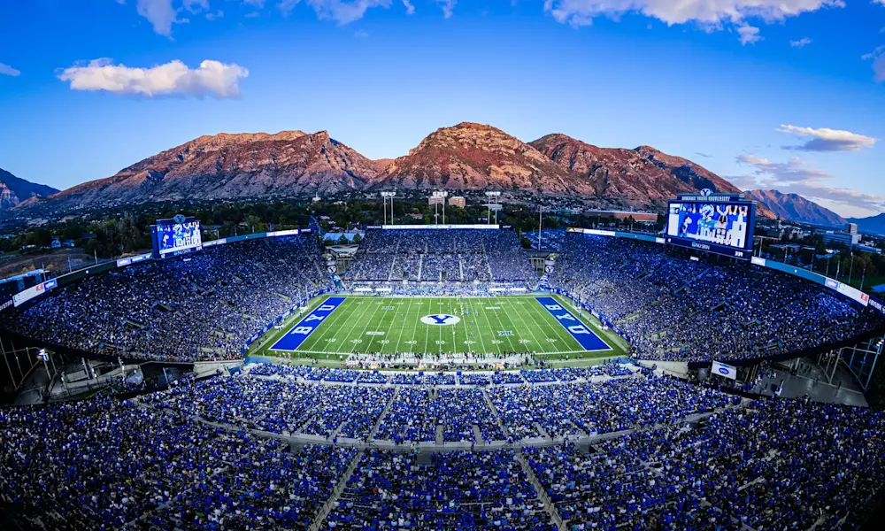
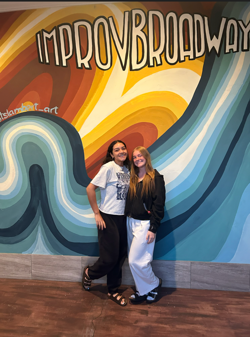
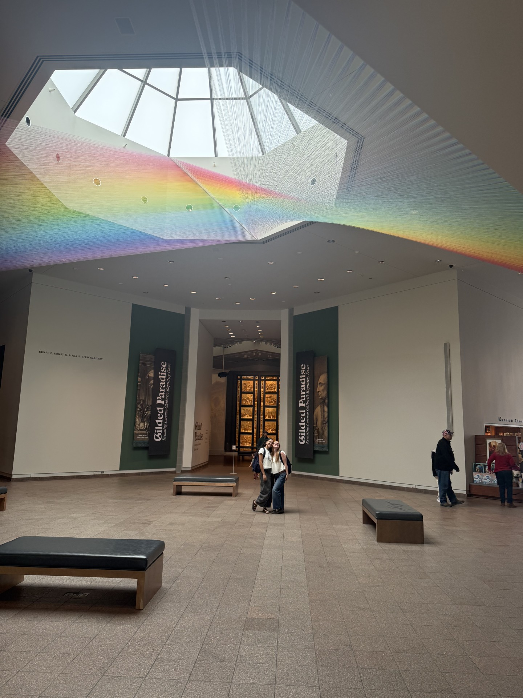
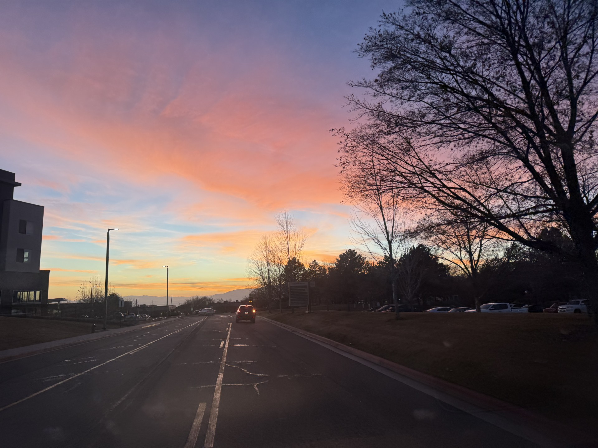
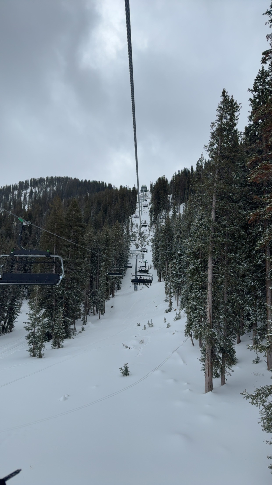
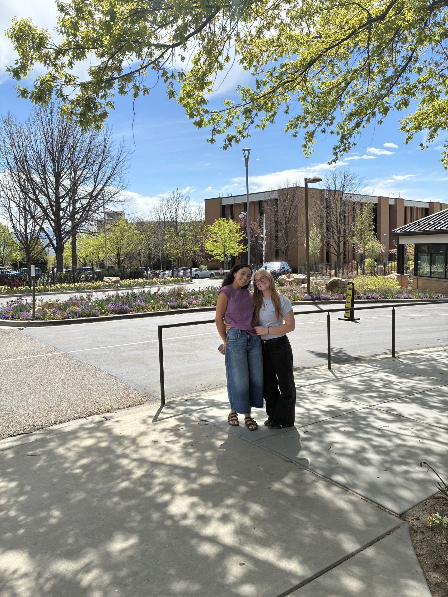
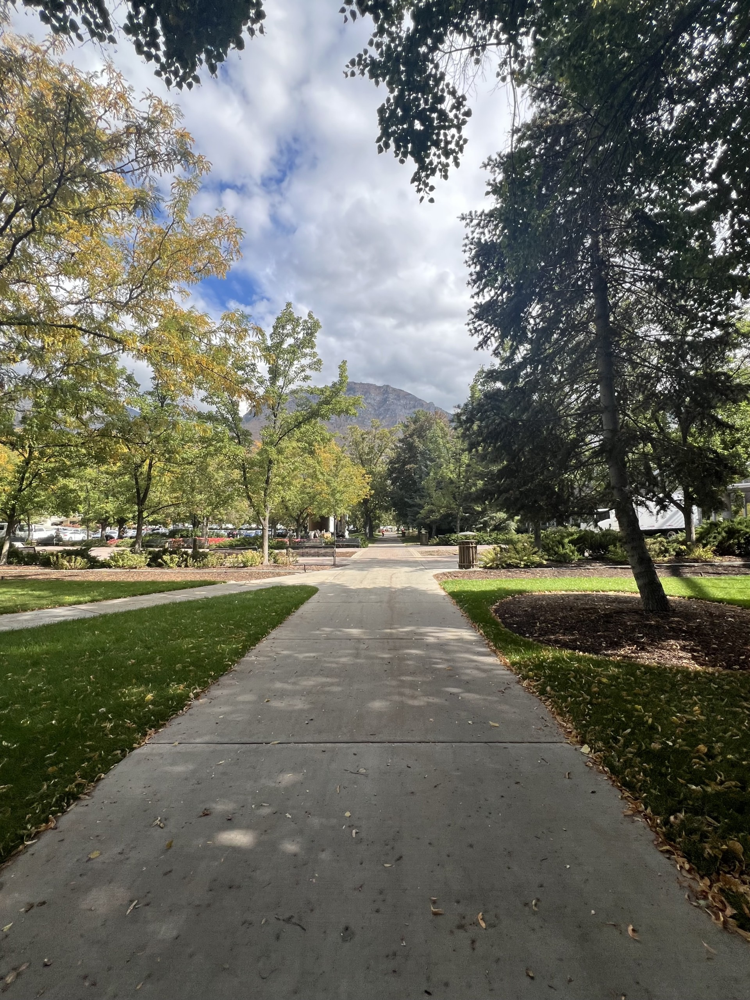

Campus Life

Slowing down and appreciating campus is one of the most meaningful parts of freshman year. The environment at BYU creates space for both growth and reflection.
Freshman Experience Guide

Attend Sports Events
I went to and enjoyed football, basketball, lacrosse, rugby, and soccer games.

Capture Campus Beauty
My favorites are the bell tower, duck pond, and mountain views.

Comedy Show
Experience BYU improv and live performances.

Visit Museums
Variety of options including the Paleontology Museum and Museum of Art

Watch Sunsets
Enjoy multiple sunsets across campus.

Explore Provo
Go out on the town and find new activities with friends.
Devotionals & Forums
Attend spiritual events and campus devotionals.

Service
Participate in Y-Serve and meaningful service opportunities.

Iconic Walk
Walk through the botanical gardens and scenic paths.
BYU Spirit
Getting involved early helps BYU feel like home faster.
Student Insights
Students who are more involved in campus life tend to feel more connected and perform better academically during their first year.